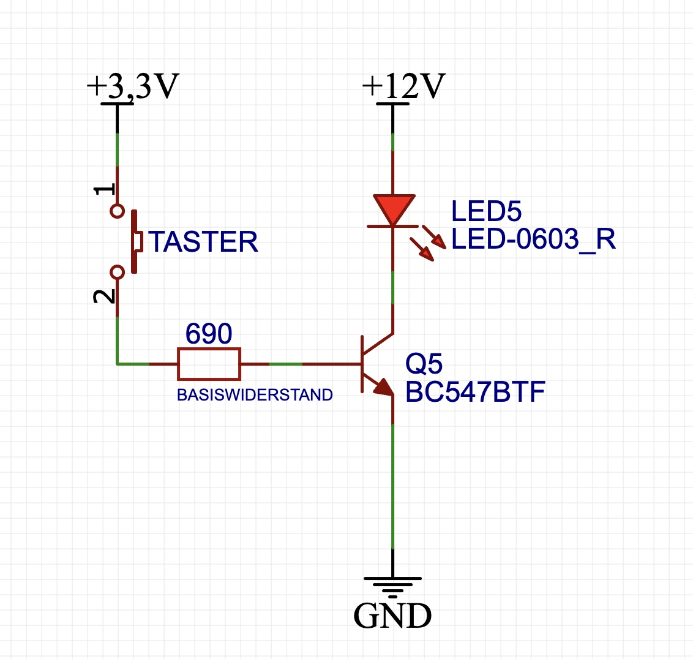
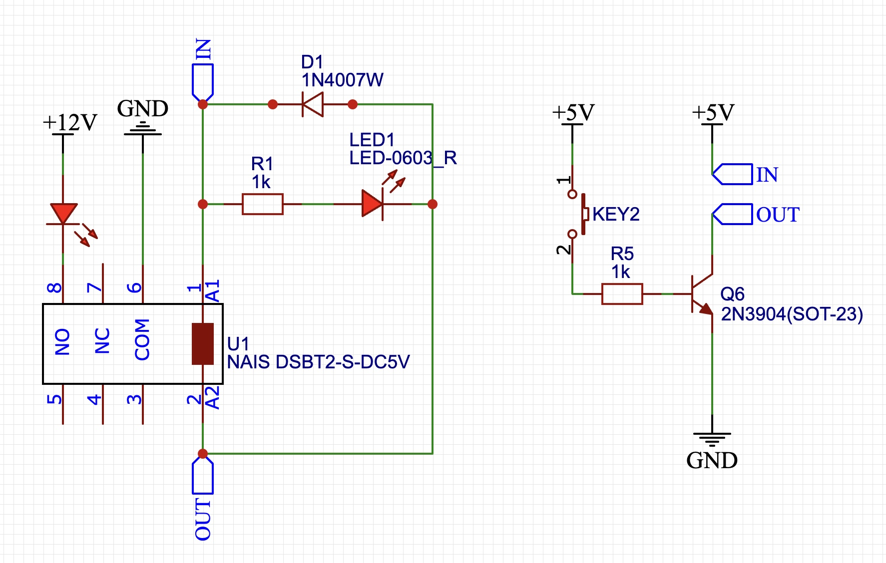
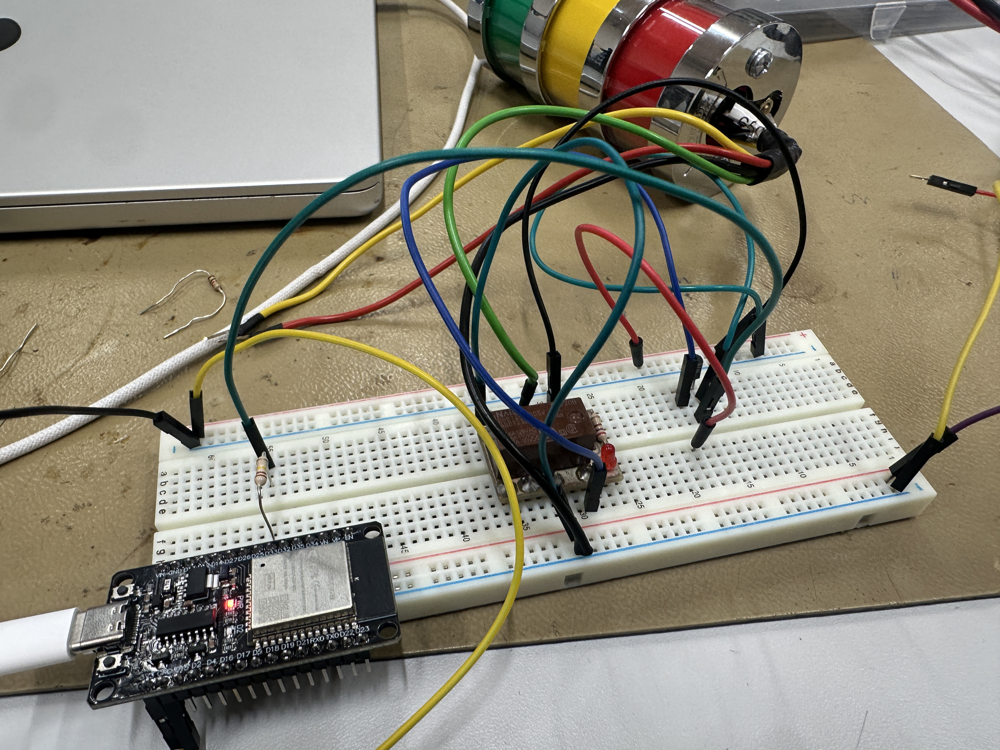
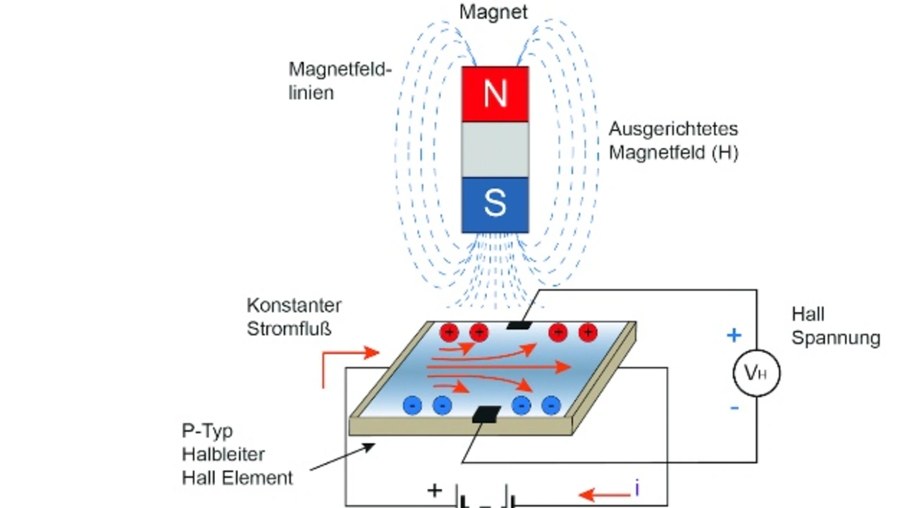

Werkstättenprotokoll 13.11
| Titel | Daten |
|---|---|
| Einheit | 13.11 |
| Inhaltsübersicht | Übung: NPN-Transistor als Schalter; Das Relai; Der Halleffektsensor |
| Stunden (Einheiten) | 7 |
| Fachlehrer | Martin GIMPL |
| Werkstätte | EMC |
Inhalt
- Übung: NPN-Transistor als Schalter
- Ziel: Eine Glühlampe mit einem Taster ein- und auszuschalten
- Umsetzung
- Schaltplan erstellen mit easyEDA
- Schaltung berechnen
- Prototyp mit der Hilfe des Steckbretts schaltplangetreu aufbauen
- Das Relai
- Ziel: Eine Lampe mit einem Taster ein und aus zu Schalten
- Der Halleffektsensor
- Ziel: Ein magnetisches Feld mit einem Mikrocontroller messen zu können
Protokoll
Übung: NPN-Transistor als Schalter
Ziel der Übung war es, eine Glühlampe mit der Hilfe eines NPN-Transistors ein- und auszuschalten.
Schaltplan

Note
Die Glühbirne wurde hier mit einer LED dargestellt.
Schaltung berechnen
Auf dem Schaltplan ist ein Basiswiderstand zu finden. Dieser wurde mit folgender Formel berechnet:
entspricht dabei .
Note
h_FE kann aus dem Datenblatt des Transistors abgelesen werden. h_FE entspricht dabei den Verstärkungswert des Transitors. I_b ist der Basisstrom unter Berücksichtigung des Verstärkungswert. I_C hingegen ist der Basisstrom ohne Berücksichtigung.
Weiteres zu dem NPN-Transistor kann unter diesem Skriptumseintrag nachgelesen werden.
Das Relai
Ziel der Übung war ähnlich zu der des Transistors. Der Unterschied: Diesmal soll der Transistor mit einem Relai ersetzt werden.
Schaltplan

Auf dem Schaltplan ist ein Übungsrelai zu sehen, welches durch einen Transistor und einem Taster gesteuert wird.
Funktionsweise eines Relais
Dies kann aus diesem Skriptumseintrag entnommen werden.
Aufbau
Attention
In folgendem Schaltplan wurde weder der Basiswiderstand des Transistors noch die Spannung korrekt eingetragen. Der Basiswiderstand sollte bei 3,3 V angelegter Spannung (bei Basis und Kollektor) 690 Ohm betragen.

Warning
Bei diesem Aufbau wird anstelle des Tasters ein Mikrocontroller eingesetzt.
Der Halleffektsensor
Bei diesem praktischen Aufbau war das Ziel, ein magnetisches Feld zu messen und über die serielle Schnittstelle eines ESP32 auszugeben.
Funktionsweise des Halleffektsensors
Ein Halleffektsensor nutzt den Hall-Effekt, bei dem in einem stromdurchflossenen Leiter eine Spannung (Hall-Spannung) entsteht, wenn dieser senkrecht zu einem Magnetfeld steht. Die Stärke der Hall-Spannung ist proportional zur Stärke des Magnetfelds. Dadurch kann der Sensor magnetische Felder erfassen und zur Messung von Position, Drehzahl oder Strom verwendet werden.
Diese Grafik kann diesen Prozess näher beschreiben:

Code
Mit folgendem Code konnte das magnetische Feld gemessen werden:
#include <Arduino.h>
#define SENSOR 33
void setup() {
pinMode(SENSOR, INPUT);
Serial.begin(9600);
}
void loop() {
Serial.println(analogRead(SENSOR));
}
Code
Der gesamte Code befindet sich auf Github und kann unter diesem Link geöffnet werden.